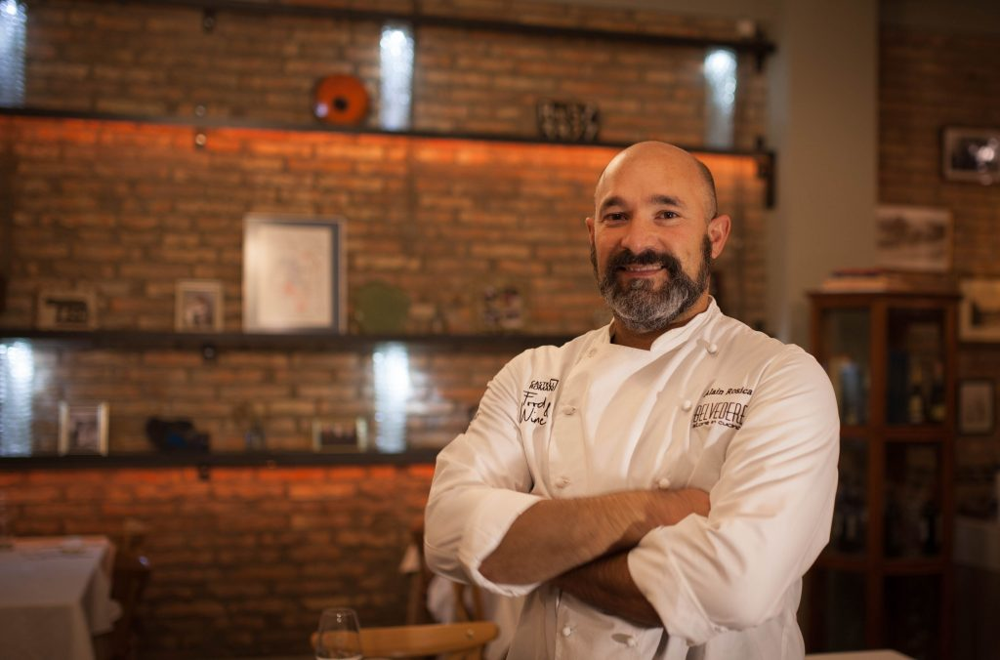

Due Fratelli, Una Passione
La cucina è il nostro linguaggio
Nel 1998, i fratelli Alain e Nelson Rosica hanno raccolto l'eredità di una storica trattoria sul colle di Frascati, trasformandola in un ristorante che oggi è punto di riferimento per la cucina mediterranea in tutta la provincia di Roma. Due mani, una visione.

Alain Rosica
Alain è il cuore creativo della cucina del Belvedere. Dal 1998, quando insieme al fratello Nelson ha rilevato la storica trattoria, ha portato una visione innovativa senza mai tradire le radici mediterranee.
La sua cucina è un racconto continuo: ogni piatto nasce dalla storia del territorio, dalla stagionalità delle materie prime e dalla costante ricerca di combinazioni che sorprendano il palato.
Formatosi nelle cucine dei Castelli Romani e poi affinato attraverso esperienze in diverse realtà della ristorazione italiana, Alain ha sviluppato uno stile personale che unisce tecnica moderna e rispetto assoluto per l'ingrediente.
"La cucina è racconto. Ogni piatto porta con sé la storia del nostro territorio e la passione per le materie prime autentiche."
Nelson Rosica
Nelson è la colonna portante dell'operatività del Belvedere. Il suo approccio metodico e la sua attenzione ai dettagli garantiscono che ogni servizio sia impeccabile, dalla selezione degli ingredienti alla presentazione del piatto.
Insieme ad Alain, ha costruito una rete di fornitori locali che garantiscono prodotti a chilometro zero: ortaggi dai campi dei Castelli Romani, formaggi delle aziende agricole circostanti, pesce fresco e carni selezionate.
La sua filosofia è chiara: innovare nel rispetto della tradizione, utilizzando tecniche contemporanee per esaltare sapori che appartengono alla memoria gastronomica del Lazio.
"Innovare rispettando la tradizione: è questa la sfida che affrontiamo ogni giorno, con prodotti locali e tecniche che guardano al futuro."
La Cucina come Atto d'Amore
Km Zero
Ingredienti genuini a chilometro zero, selezionati personalmente dai produttori locali dei Castelli Romani. Ogni piatto racconta il territorio.
Stagionalità
Il menu segue il ritmo delle stagioni. Ciò che la terra offre in ogni periodo dell'anno diventa l'ispirazione per nuove creazioni.
Innovazione
Tecniche contemporanee al servizio della tradizione. Ogni piatto è un dialogo tra memoria e sperimentazione, tra passato e futuro.
Vieni a Scoprire i Nostri Piatti
Prenota un tavolo e lascia che Alain e Nelson ti raccontino la loro storia attraverso il gusto.